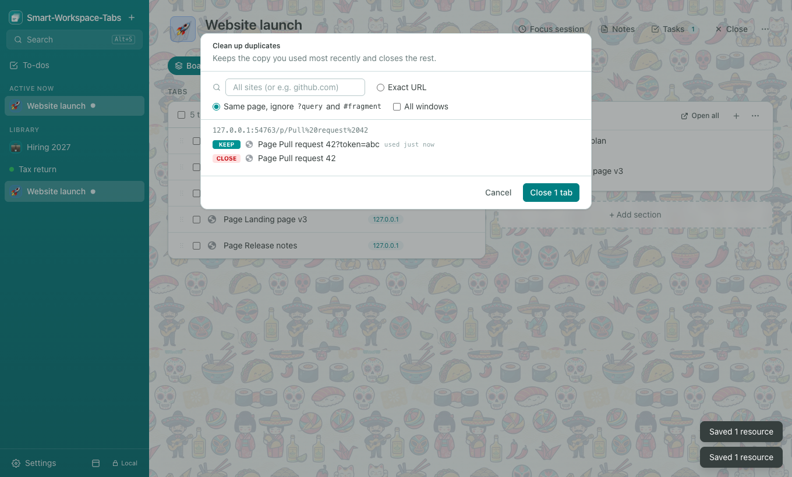
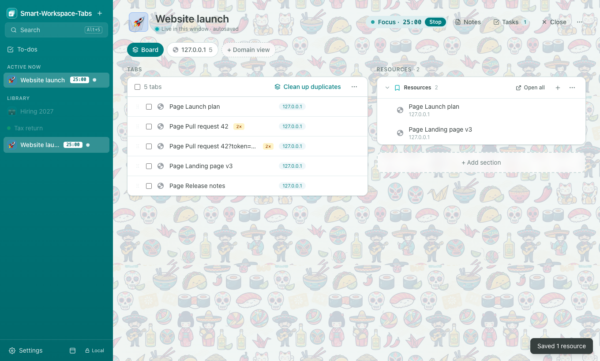
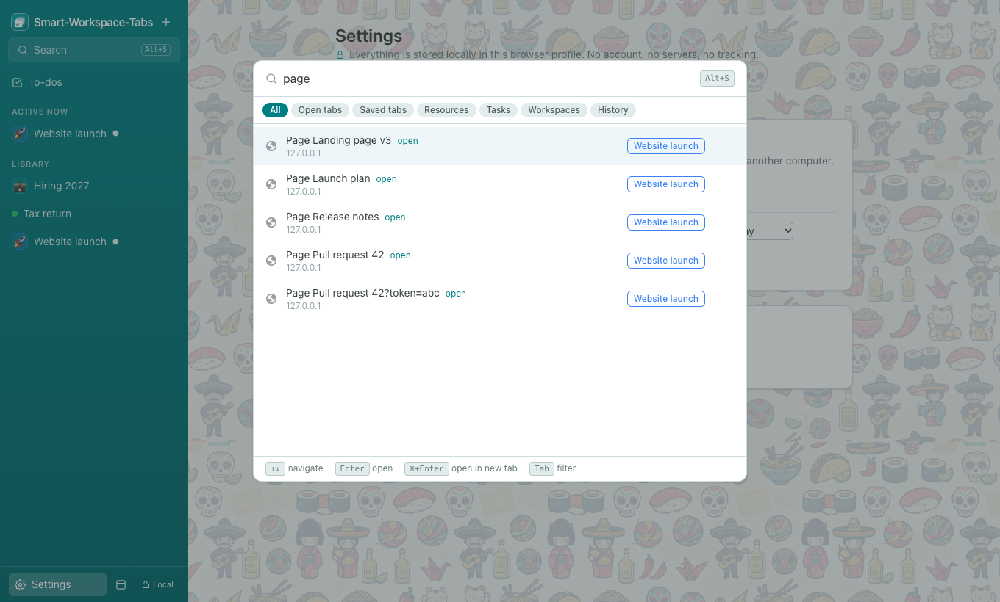
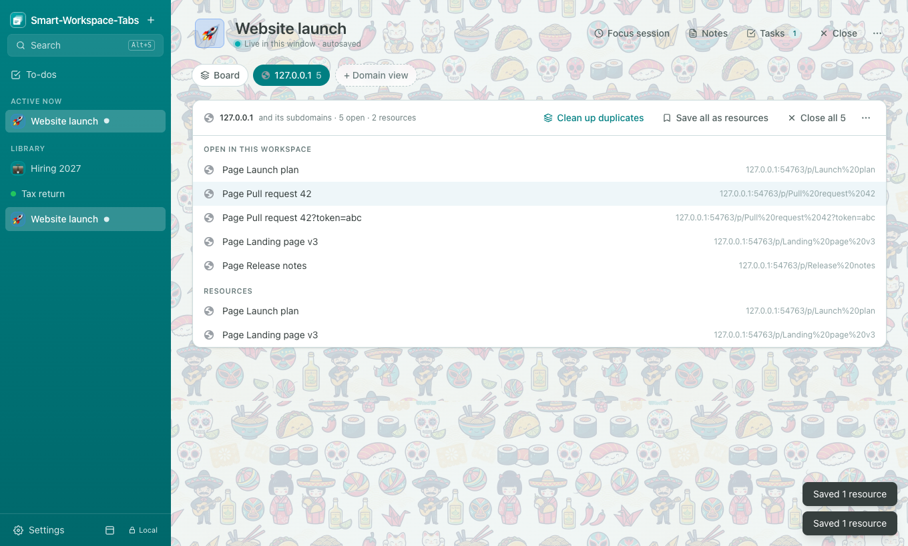
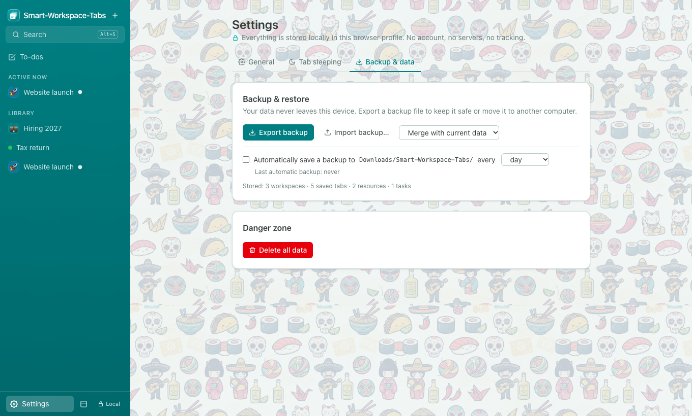

すべてのプロジェクトに、 専用のワークスペースを.
散らかったタブを、リンク・メモ・タスクリスト付きのプロジェクト別ワークスペースに整理しましょう。使っていないタブをスリープさせてメモリを節約し、重複を取り除き、作業の流れを失いません。データがブラウザの外に出ることはありません。

0 KB
外部サーバーに送信されるデータ
~0.5 s
バックグラウンドでのスマートな自動保存
最大 80%
ネイティブのスリープ機能によるメモリ削減
1 クリック
Chromeのタブグループを変換
開発者、研究者、クリエイターのために設計
迷子のタブや重いブラウザとはお別れです。ウィンドウとセッションを、自由かつプライベートに管理できます。
スムーズなワークスペース切り替え
同じウィンドウのままプロジェクトを切り替えられます。現在のワークスペースはタブを保存して閉じ、次のプロジェクトのタブを固定タブやグループもそのままに即座に復元します。
重複タブの整理
1つのワークスペース内、またはすべてのウィンドウで重複したページを見つけて閉じます。URLの完全一致か、セッションのパラメータやトークンを無視して比較し、閉じる前にプレビューで確認できます。
ドメインビュー
特定のウェブサイト（例: github.com、notion.so）をすべてのタブとサブドメインにわたって追跡します。まとめて操作:
フォーカス、リソースとして保存、重複の整理。
クイック検索（Alt+S)
開いているタブ、閉じたワークスペース、保存済みリソース、タスク、履歴をあいまい検索で瞬時に探せます。 Enter を押すと、必要に応じてワークスペースを自動で切り替えて、そのタブへ直接移動します。
集中セッション
時間を区切って作業できます（15分、25分、50分）。タイマーは上部バーとサイドバーに表示され、ほかのワークスペースを薄く表示して集中を守ります。
タブのスリープ（メモリ節約）
使っていないタブのプロセスを解放して、ギガバイト単位のメモリを空けます。音声再生中のタブ、固定タブ、指定したドメインはスリープさせません。
タブグループをワークスペースに変換
Chromeのタブグループをすでに使っていますか？ゼロから始める必要はありません。Smart-Workspace-Tabs がグループを検出し、ワンクリックで独立したワークスペースに変換します。
- 元のグループの名前、色、すべてのタブを引き継ぎます。
- グループに入っていないタブは、ウィンドウにそのまま残ります。
- 作成したワークスペースはフォルダやコレクションで整理できます。

重複タブを安全に削除
同じドキュメントやサポートチケットを何度も開いていませんか？クリーナーが重複を賢く見つけ、閉じる前にプレビューで確認できます。
- 完全一致: 1つのワークスペースまたはすべてのウィンドウで、まったく同じURLを見つけます。
- パラメータを無視: セッショントークンや内部リンクが異なっていても、同じページとして検出します。
- アクティブなタブと固定タブは常に保護されます。

集中セッションで1日を整理
一度にひとつの作業に集中しましょう。時間の長さを選んでタイマーを開始すれば、拡張機能が気が散る要素を減らします。
- サイドバーのほかのワークスペースを薄く表示し、うっかり切り替えるのを防ぎます。
- 思いつきでの切り替えを防ぐ確認ダイアログを表示します。
- ワークスペースごとの集中時間をローカルに記録し、自分で管理できます。

スピードとわかりやすさを重視したデザイン
Grupo Ōkami にインスパイアされたティール系のカラーパレット、ダークモード、カスタマイズ可能な背景を備えた洗練されたインターフェースです。






内部の仕組み
パソコンのリソースとプライバシーを大切にする、透明性のある設計です。
安全なインストール
初めてインストールすると、開いている各ウィンドウが最初のワークスペースになります。タブが失われたり、誤って閉じられたりすることはありません。
同じウィンドウで切り替え
ワークスペースを切り替えると、現在のタブを保存して閉じ、新しいワークスペースのタブをちらつきなく復元します。
データを完全に管理
すべての情報はChromeの IndexedDB に保存されます。いつでもJSONでバックアップを書き出せるほか、ダウンロードフォルダへの自動バックアップも設定できます。
Smart-Workspace-Tabs をインストール
Google Chrome と Chromium ベースのブラウザ（Brave、Edge、Arc、Vivaldi）で利用できます。
Chrome ウェブストア
Chrome ウェブストアからワンクリックで公式にインストール。自動更新に対応し、面倒な設定は不要です。
Chromeに追加 — 無料もっと速く、すっきりしたChromeにしませんか？
散らばった何十ものタブに迷うのはもう終わり。プロジェクトごとにまとめ、メモリを節約し、プライバシーを守りましょう。